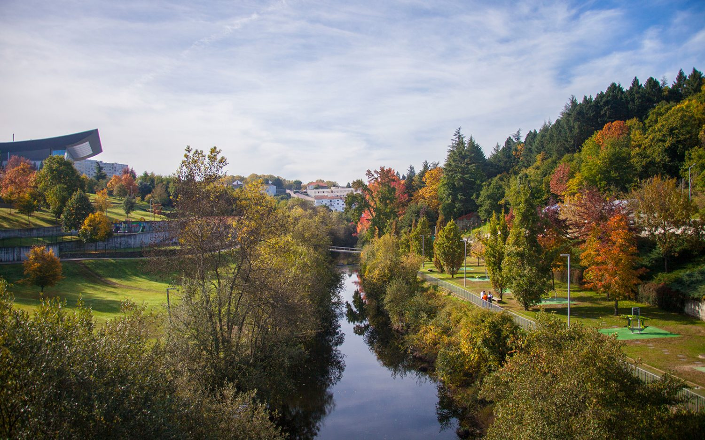

Parque do Corgo

Situado nas margens do rio Corgo, tem uma área de aproximadamente 33 hectares. Encontra-se ligado ao pulmão da cidade, Parque Florestal, e engloba vários aparelhos à disposição de qualquer cidadão, tais como campos polidesportivos, parque de merendas de Codessais, piscinas municipais abertas, parque infantil, cafés, itinerários pedestres e ainda alguns moinhos recuperados.
“O nome de Trasmontano, que quer dizer filho de
Trás-os-Montes, pois assim se chama o Reino Maravilhoso de que
vos falei.” (Miguel Torga)